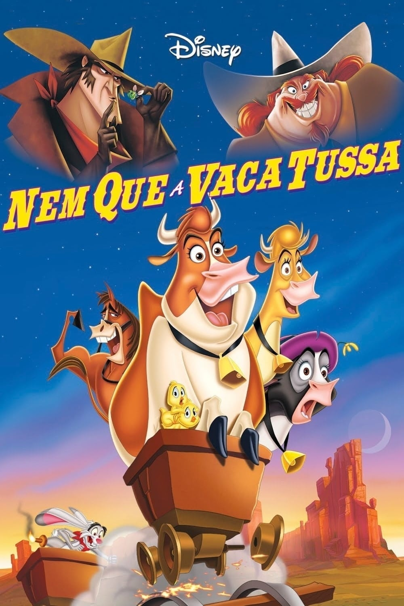

PETS UNIDOS (2019)
Max, um cão da raça terrier, precisa aprender a conviver com Duke, o novo cão do seu dono. Os dois acabam na carrocinha e agora, juntos nas ruas de Nova York, conhecem um adorável coelho branco, líder de um exército de animais abandonados.


